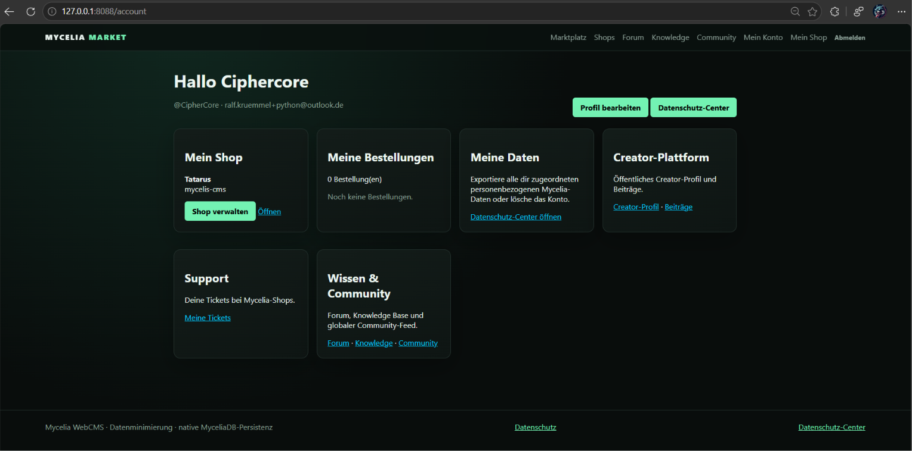
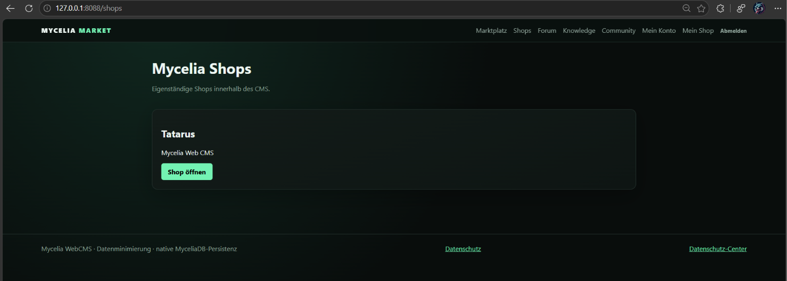
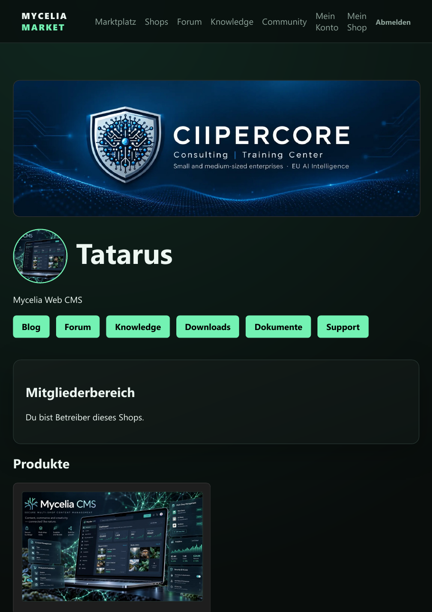
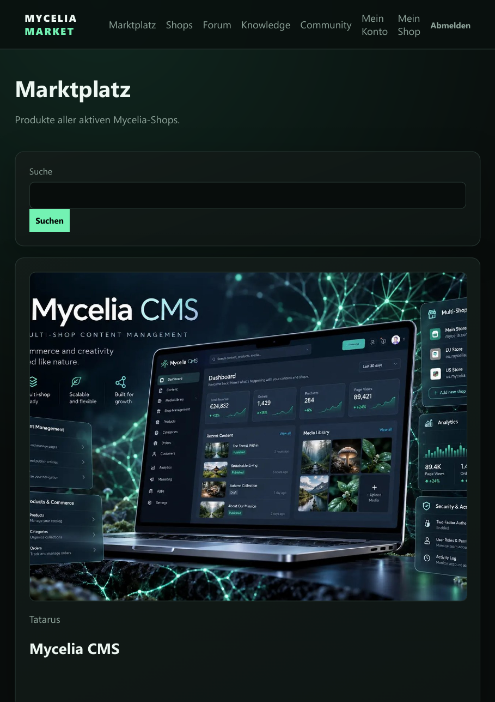
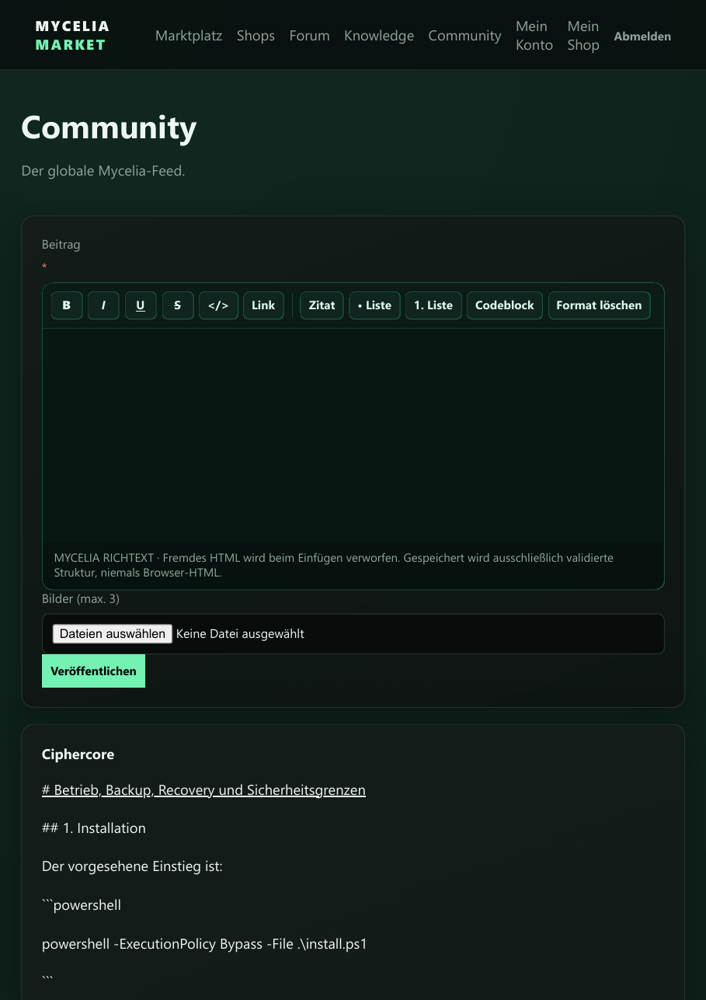
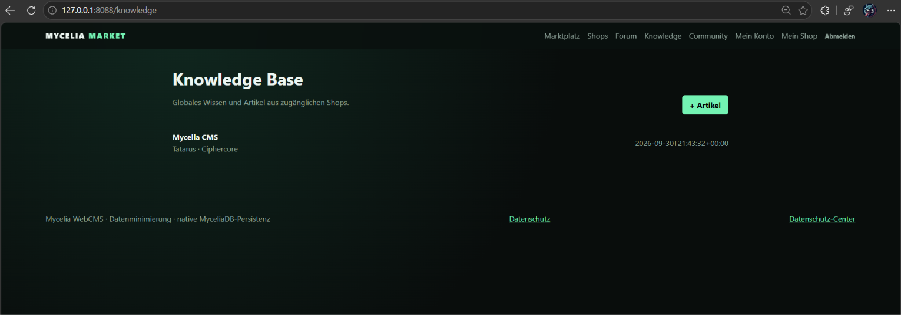
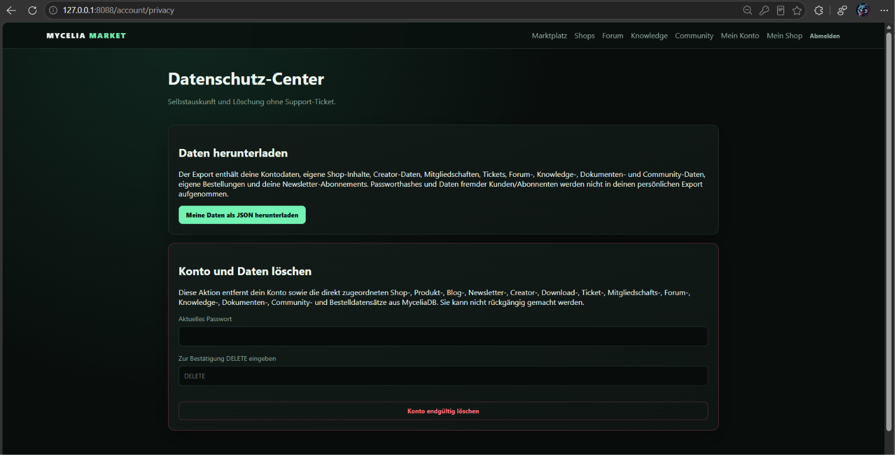

The client asks.
Der Browser beschreibt die gewünschte Aktion und sorgt für eine schnelle Benutzererfahrung.
Content. Commerce. Community. Identity. Security. Data.
Eine Plattform. Eine Architektur.
Stop assembling platforms.
MyceliaDB ist die native Persistenzbasis des Systems. Die Plattform arbeitet ohne zweite SQL-/SQLite-Persistenzschicht und hält die Datenarchitektur im eigenen Stack.
Security isn't a checkbox. In Mycelia reicht sie vom Request über Identität und Geschäftslogik bis zur Persistenz.
Der Browser beschreibt die gewünschte Aktion und sorgt für eine schnelle Benutzererfahrung.
Autorisierung, Validierung, Eigentum und kritische Zustandswechsel bleiben serverseitige Entscheidungen.
Die folgenden Ansichten stammen aus dem laufenden Mycelia WebCMS 0.8.







Der persönliche Export aggregiert die zugeordneten Mycelia-Daten. Das Datenschutz-Center ermöglicht Selbstauskunft und die kontrollierte Löschung des Kontos direkt in der Oberfläche.
Proxy-Vertrauen wird bewusst konfiguriert. Weiterleitungsheader werden nicht pauschal als Wahrheit behandelt.
Backups werden vor dem Restore authentifiziert. Ein manipulierter Snapshot führt zum Abbruch statt zum stillen Laden.
Richtext wird als validierte Struktur gespeichert; Bilder werden dekodiert, normalisiert und neu kodiert.
Recovery bleibt vom Produktivbetrieb getrennt und wird gegen überprüfbare Datenintegrität durchgeführt.
“The foundation needs to be understood.”
MYCELIA ENGINEERING PRINCIPLEContent. Commerce. Identity. Security. Data.
One architecture.